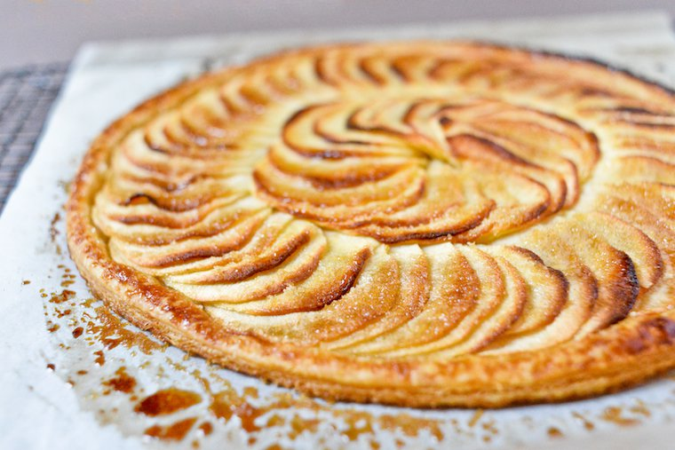

<ion-view view-title="Tarte aux pommes">

    <ion-content class="padding">

        <h1>Tarte aux pommes</h1>

        

        <p class="gras">Temps de préparation : 15 minutes</p>

        <p class="gras">Temps de cuisson : 20 minutes</p>

        <p class="gras">Ingrédients / pour 6 personnes</p>
        <ul>

            <li>- 3 ou 4 pommes (selon la grosseur)</li>
            <li> - 1 pâte brisée</li>
            <li>- 2 oeufs</li>
            <li>- 25 cl de crème fraîche</li>
            <li>- 100 g de sucre en poudre</li>
            <li>- 1 sachet de sucre vanillé</li>
        </ul><br>

        <p class="gras">Préparation de la recette :</p>

        <p>Posez sur un fond de moule à tarte une pâte brisée que vous trouez avec une fourchette.</p>
        <p>Pelez et coupez les pommes en fines tranches que vous disposer sur le fond de tarte.</p>
        <p>Dans un saladier, mélangez le sucre, la crème fraîche, les oeufs, le sucre vanillé; versez le tout sur les pommes.</p>
        <p>Enfournez au four préchauffé à 200°C (th 6-7), jusqu'à ce que la tarte prenne une belle couleur dorée.</p>


    </ion-content>

</ion-view>